Open positions for postdoctoral researchers and graduate students with backgrounds in physics, materials science, chemistry, or electrical engineering.
Postdoctoral Researcher
1 vacancy — 2D heterostructure fabrication for QIS. seunguk@skku.edu
Integrated M.S.–Ph.D. Students
Ongoing recruitment. SKKU Department of Energy Science.
Undergraduate Interns (URP)
SKKU Undergraduate Research Program — each semester.
Research — Areas & Opportunities
Engineering quantum states in solid-state materials.
One platform — atomically precise growth — driving quantum light, ferroelectric low-power electronics, and cryogenic quantum hardware.
One platform, three missions
How our research connects
Everything starts from a single capability — atomically precise growth. The same crystals and tools then drive three application missions: engineering quantum light, building ferroelectric low-power electronics, and creating cryogenic quantum hardware.
Shared foundation · feeds every mission
Atomic-Layer Synthesis Platform
Wafer-scale, phase-pure epitaxy with atomic-level interface control — MOCVD, source-confined CVD, and ML-guided growth.
grows ↓
Mission 01
Quantum Light & Information
Manipulating quantum states of light and excitons in engineered 2D interfaces.
Targets
Site-defined single-photon emitters
Ferroelectric-gated bound excitons
WS₂MoSe₂2D ferroelectrics
Mission 02 · New
Ferroelectric Logic & Memory
Low-power and cryogenic nanoelectronics from 2D ferroelectric devices.
Targets
Ferroelectric & negative-capacitance FETs
Non-volatile memory
Cryogenic nanoelectronics
In₂Se₃AlScNInSe
Mission 03
Cryogenic & Quantum Electronics
Superconducting and topological hardware for quantum computing.
Targets
van der Waals transmon qubits
Josephson Ferroelectric FET
Topological spin–charge devices
FeSePtTe₂Te
Materials × Missions
What each material enables
Material grown ↓ / Mission →
01 · Quantum Light
02 · Ferroelectric Logic & Memory
03 · Cryogenic & Quantum
TMD semiconductors
WS₂ · MoSe₂
Single-photon emitters
FeFET channels & memory
Cryogenic transport devices
2D ferroelectrics
In₂Se₃ · AlScN · CuInP₂S₆
Bound-exciton control
FeFET · NC-FET · memory
Josephson FeFET · cryogenic nanoelectronics
III–VI compounds
InSe · In₂Se₃ · (In,Ga)Se
Single-photon emitters
Low-power logic channels
Cryogenic nanoelectronics
Topological
PtTe₂ · Te · MoTe₂
Te ferroelectric logic
Spin–charge conversion
Superconductors
FeSe
vdW transmon qubits
Active Ferroelectric-driven —
Mission 01
Quantum Light & Information
Build site-defined emitters in 2D interfaces, then program them with ferroelectric fields.
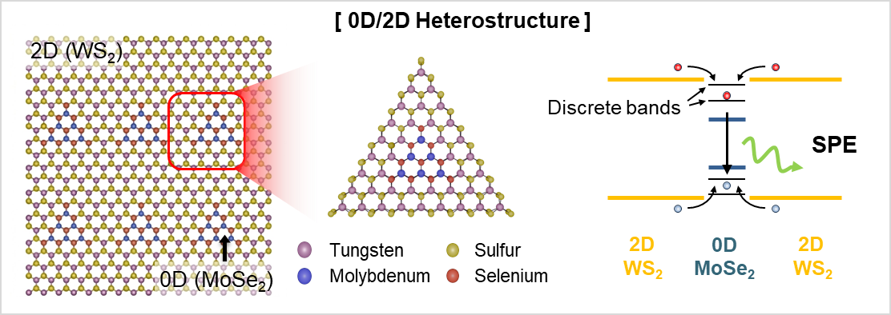
1.1 · Quantum Emitters
Fabrication of Quantum Emitters
Site-defined single-photon sources from 0D/2D lateral heterostructures, with spatial confinement engineered to control spin and charge dynamics. Wafer-scale WS₂ targets high coherence; Mn doping adds local magnetic moments.
Grows from WS₂MoSe₂
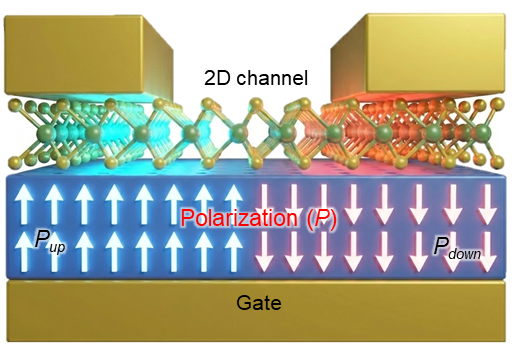
1.2 · Excitonics
Ferroelectric-Induced Bound Excitons
Ferroelectric polarization creates spatially programmable bound excitons. Gate-modulated, field-dependent dynamics give dynamical control of quantum emission through field and doping.
Grows from 2D ferroelectrics
Mission 02 · New
Ferroelectric Logic & Memory
2D ferroelectrics as a route to low-power and cryogenic nanoelectronics.
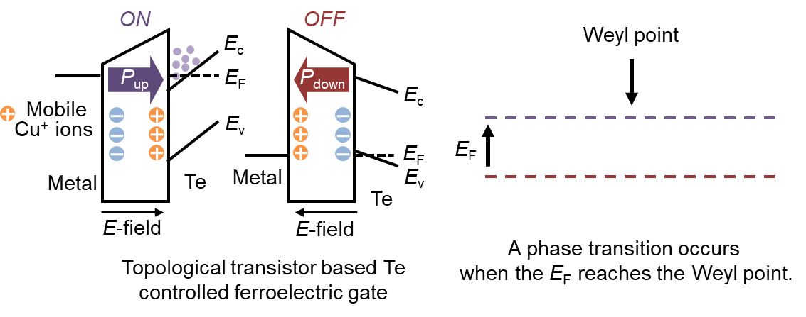
2.1 · Ferroelectric Devices
Ferroelectric FETs & Negative-Capacitance
2D ferroelectrics (In₂Se₃, AlScN) gate semiconductor channels to build non-volatile ferroelectric FETs, steep-slope negative-capacitance transistors, and low-power memory — extensible to cryogenic nanoelectronics.
Grows from In₂Se₃AlScNCuInP₂S₆
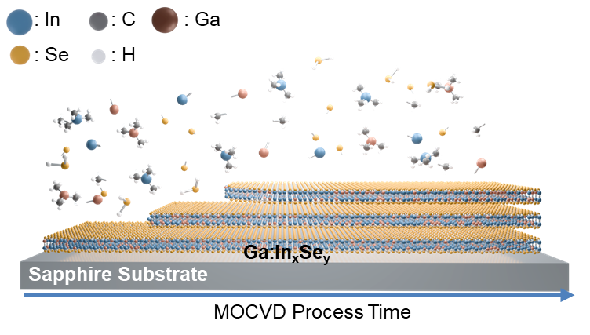
2.2 · III–VI Semiconductors
III–VI Compound Semiconductors
InSe and In₂Se₃ host rich structural phases and high thermal velocity. We tune composition continuously between InSe and In₂Se₃ and alloy with gallium — (In,Ga)Se — to engineer band structure for low-power channels.
Grows from InSeIn₂Se₃(In,Ga)Se
Mission 03
Cryogenic & Quantum Electronics
Topological and superconducting materials grown into quantum hardware.
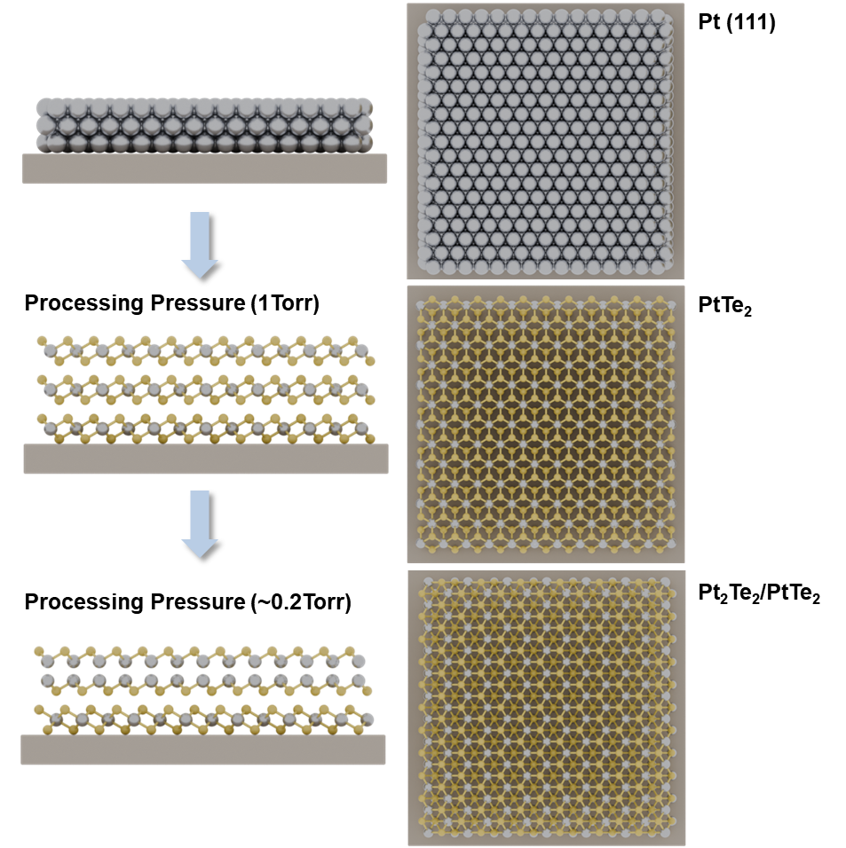
3.1 · Topological
Topological Materials
Type-II semimetals and Weyl semiconductors (PtTe₂, Te) with topological protection and spin–charge conversion, grown by solid-state recrystallization for clean, scalable crystals.
Grows from PtTe₂TeMoTe₂
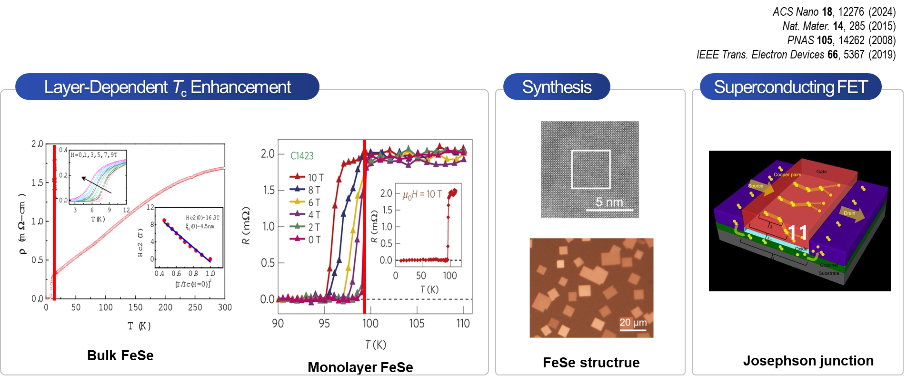
3.2 · Superconductors
Superconductors
To overcome quasiparticle poisoning and parasitic two-level systems in 3D Josephson junctions, we pursue a Josephson Ferroelectric FET (Target 1) and van der Waals transmon qubits (Target 2).
Grows from FeSe
Research Sponsors
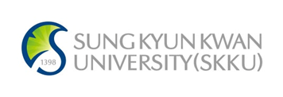
QS LabPeople
A multidisciplinary team across physics, materials science, chemistry & EE.
1 PI1 Postdoc1 Research Assoc.8 Graduate5 Interns
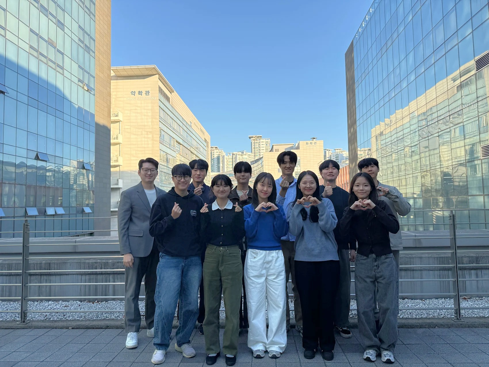
QS Lab · Sungkyunkwan University · 2026
A small group that grows together.
From wafer-scale crystal growth to cryogenic measurement, we work side by side across disciplines — sharing tools, ideas, and the occasional late-night lab run. We're always looking for curious students who want to build quantum technology from the atom up.
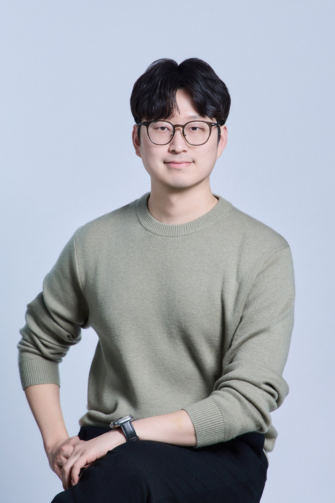
SS
Click to change photo
Seunguk Song, Ph.D. (송승욱; 宋昇昱)
Assistant Professor · Energy Science & Energy, SKKU
Dr. Song earned his Ph.D. from UNIST (2021) on synthesis and electrical characterization of van der Waals heterostructures. As postdoctoral fellow at the University of Pennsylvania under Prof. Deep Jariwala, he worked on wafer-scale 2D/3D heterostructure integration for ultra-low power logic, memory, and neuromorphic computing. He joined SKKU as Assistant Professor in 2024.
Received B.Sc./M.Sc. from Aligarh Muslim University and Ph.D. in Physics from Jawaharlal Nehru University (2020). Postdoc at SAINT, SKKU (2020–2025). Research focuses on quantum phase metal-insulator transitions, metallic transport, and critical phenomena in 2D materials via semimetal and 2D metallic contacts.
Research Associate
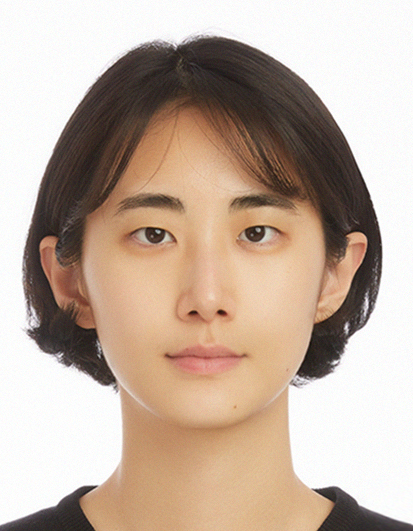
Sooyoung Choi
Research Associate (Mar 2026)
Received M.S. in Electrical Engineering from the University of Pennsylvania. Joined the lab as Research Associate in March 2026. Research interests include 2D superconductors and twist angle-dependent electronic properties in 2D heterostructures.
Graduate Students
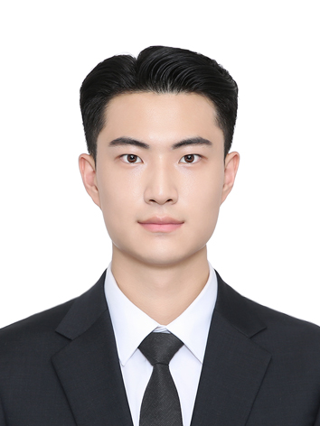
Wonchan Lee
Integrated M.S.-Ph.D. (Mar 2025)
Joined as research assistant in October 2024, transitioned to Integrated M.S.-Ph.D. program in March 2025. Research focuses on quantum phase transitions in 2D transistors and low-power computing technologies leveraging novel quantum phenomena.
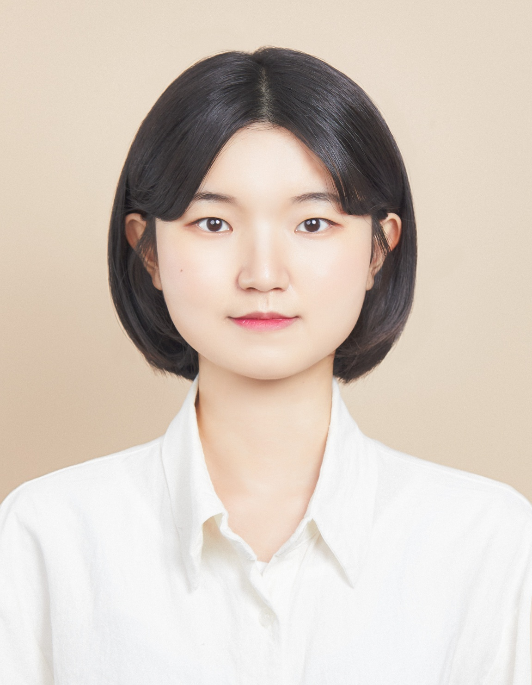
Yunjung Cho
Integrated M.S.-Ph.D. (Mar 2025)
Joined as research assistant in November 2024, transitioned to Integrated M.S.-Ph.D. program in March 2025. Research: (1) Large-area epitaxy of 2D semiconductors; (2) 0D quantum dot–TMD heterostructure fabrication.
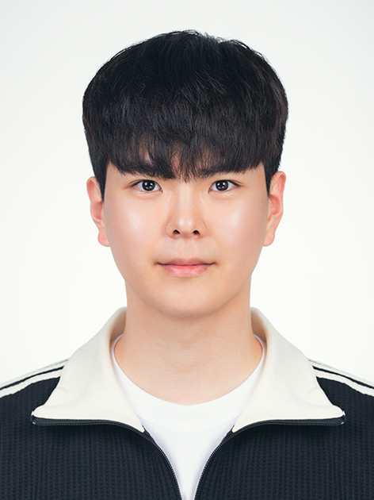
Inbae Song
Integrated M.S.-Ph.D. (Mar 2025)
Integrated M.S.-Ph.D. student since March 2025, started as undergraduate intern in January 2025. Research: growth of 2D transition metal tellurides via thermal CVD.
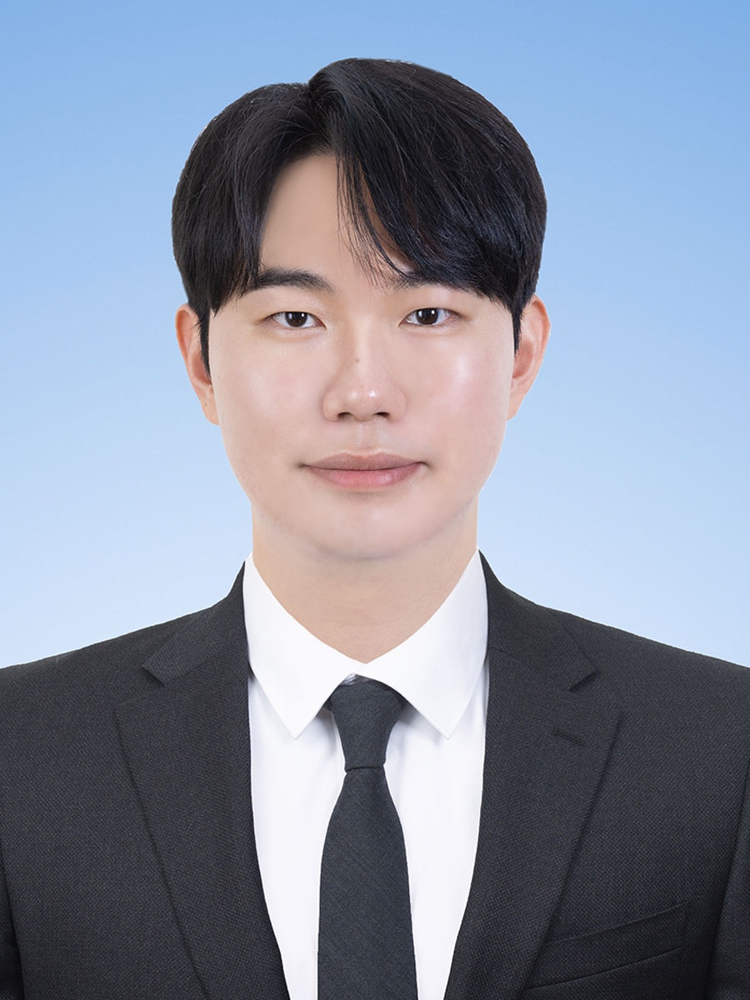
Kangpyo Cho
Integrated M.S.-Ph.D. (Mar 2025)
Integrated M.S.-Ph.D. student since March 2025, research assistant since February 2025. Focuses on growth of 2D ferroelectric materials for quantum-engineered logic and memory applications.
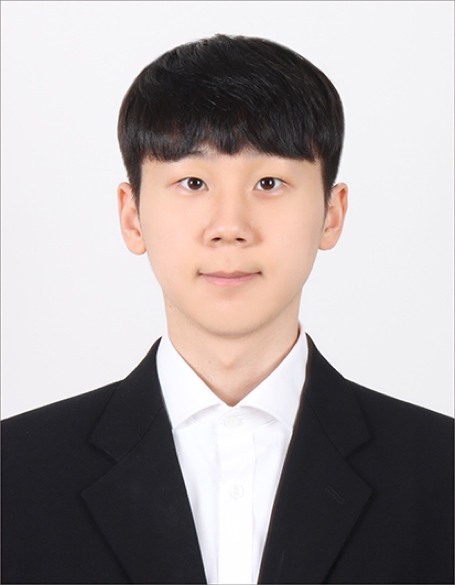
Jihwan Jeon
Integrated M.S.-Ph.D. (Sep 2025)
Integrated M.S.-Ph.D. student since September 2025, research assistant since April 2025. Focuses on wafer-scale synthesis of 2D III-VI compound semiconductors for single-photon emitters and ferroelectric memory applications.
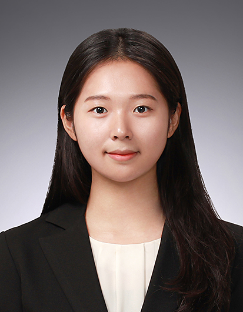
Chaehui Lim
Integrated M.S.-Ph.D. (Sep 2025)
Master-PhD Combined Program student since September 2025. Research focuses on MOCVD-based synthesis of lateral in-plane 2D heterostructures for quantum information science applications.
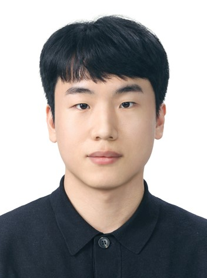
Kyungwu Kwon
Graduate Student (Mar 2026)
Undergraduate intern since March 2025, transitioning to graduate student in March 2026. Research on synthesis of 2D topological semimetals and semiconductors for nanoelectronics.
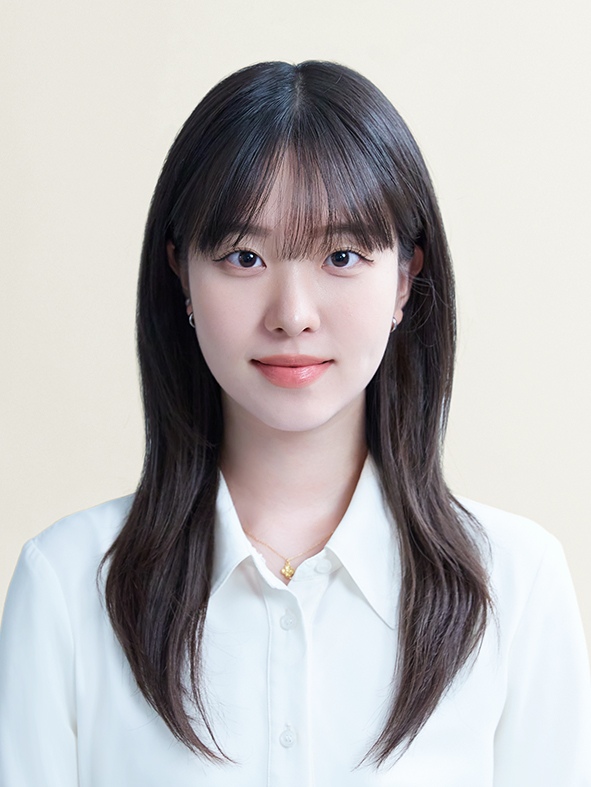
Yerin So
Graduate Student (Mar 2026)
Physics undergraduate at Sookmyung Women's University, research intern since August 2025, graduate studies starting March 2026. Research: 2D superconductors and fundamental physical properties for superconducting qubit applications.
Undergraduate Interns (URP)
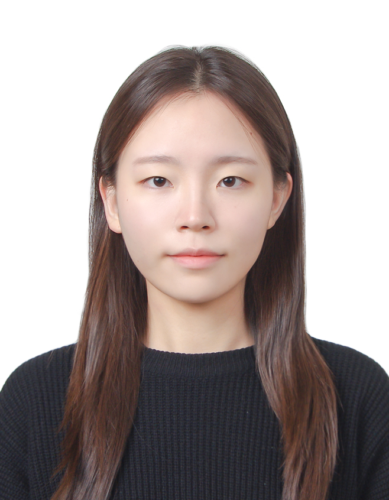
Seohee Park
Intern (Sep 2025)
Undergraduate intern since September 2025. Research: synthesizing 2D ferroelectric materials and fabricating devices for next-generation semiconductor applications.
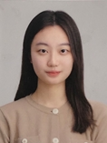
Taeyoung Jeon
Undergrad Intern
Chemical Engineering undergraduate. Research: MOCVD-based synthesis of 2D heterostructures and their applicability.
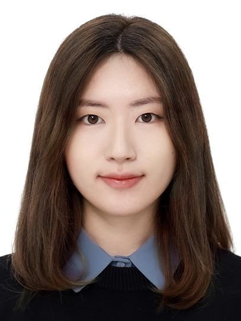
Sungwoo Yoon
Undergrad Intern
Chemical Engineering undergraduate. Research: wafer-scale synthesis of PtTe₂ via TCVD for next-generation semiconductor interconnects and spintronics.
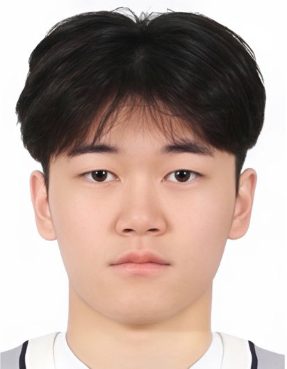
Minseok Kim
Intern (Mar 2026)
Undergraduate intern since March 2026. Research: quantum transport in 2D ferroelectric devices and low-power circuit design.
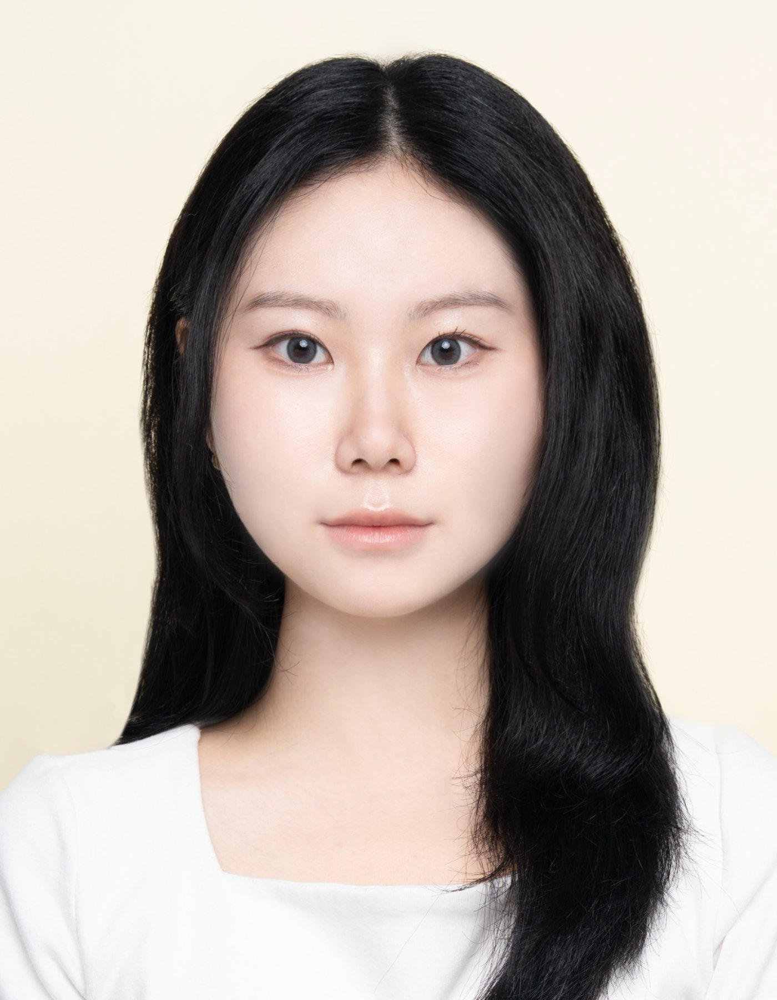
Minseo Kim
Intern (Apr 2026)
Energy undergraduate, intern since April 2026. Research: CVD synthesis of 2D heterostructures for low-power, high-performance computing.
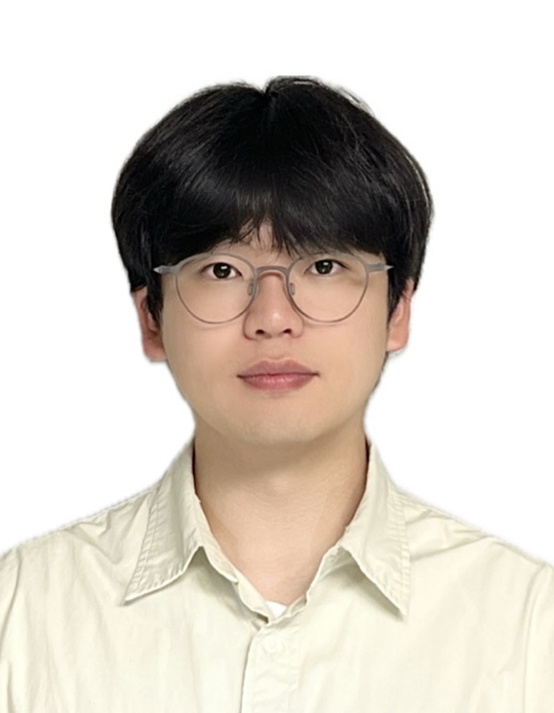
Minseong Choi
Intern (Mar 2026)
Undergraduate intern since March 2026. Research: growth and characterization of 2D layered materials for energy and electronic applications.
JL
Juhyung Lee
URP (Mar 2026)
Chemical Engineering major, URP since March 2026. Research: ML-based analysis of 2D materials for next-generation semiconductors.
DO
Dahyeon Oh
URP (Mar 2026)
Chemical Engineering major, URP since March 2026. Research: epitaxial growth control of wafer-scale WS₂ via MOCVD and data-driven optimization.
HK
Hyeonsu Kim
URP
Advanced Materials Science and Engineering major. Research: growth of 2D ferroelectric materials and integration into ferroelectric-gated Te FETs.
SL
Seoyoung Lim
URP (Mar 2026)
Chemical Engineering major, URP since March 2026. Research: growth and electrical properties of 2D semiconductor thin films via MOCVD.
SJ
Sangmin Joo
URP
Advanced Materials Science and Engineering major. Research: CVD growth of 2D materials and investigation of electronic/structural properties for device applications.
SY
Siwon Yang
URP
URP participant. Research: intercalation of MoTe₂ for modulating material properties for next-generation semiconductor applications.
JK
Jaeho Kang
URP
Chemical Engineering major. Research: MOCVD growth of 2D III-VI semiconductors and ferroelectric properties for electronic/optoelectronic applications.
Institute Joint Researchers
Juueun Park
KICET
Doyeol Ko
KITECH
Shujin Lee
KITECH
Kyung-Rok Kang
KITECH
Alumni — Chengyun Hong (Ph.D. → Postdoc POSTECH MSE) · Hyemyeong Lee · Hyungjeong Lee · Yunyeong Kim · Gunmo Koo · Sangwon Yun · Eunpyo Lee
QS LabPublications
Peer-reviewed work in 2D materials, quantum devices & nanoelectronics. * corresponding · † co-first
2D ferroelectrics and ferroelectrics with 2D: materials and device prospects
Chloe Leblanc†, Seunguk Song†, Deep Jariwala*
Current Opinion in Solid State & Materials Science, 32, 101178 (2024)
20
Tunable Localized Charge Transfer Excitons in a Mixed-Dimensional van der Waals Heterostructure
Mahfujur Rahaman, Emanuele Marino, Alan G. Joly, Seunguk Song, Zhiqiao Jiang, Brian T. O'Callahan, Daniel J. Rosen, Kiyoung Jo, Gwangwoo Kim, Patrick Z. El-Khoury, Christopher B. Murray, Deep Jariwala*
Core synthesis and low-temperature transport systems operated solely by our group at N Center, SKKU — the backbone of our day-to-day growth and device measurement.
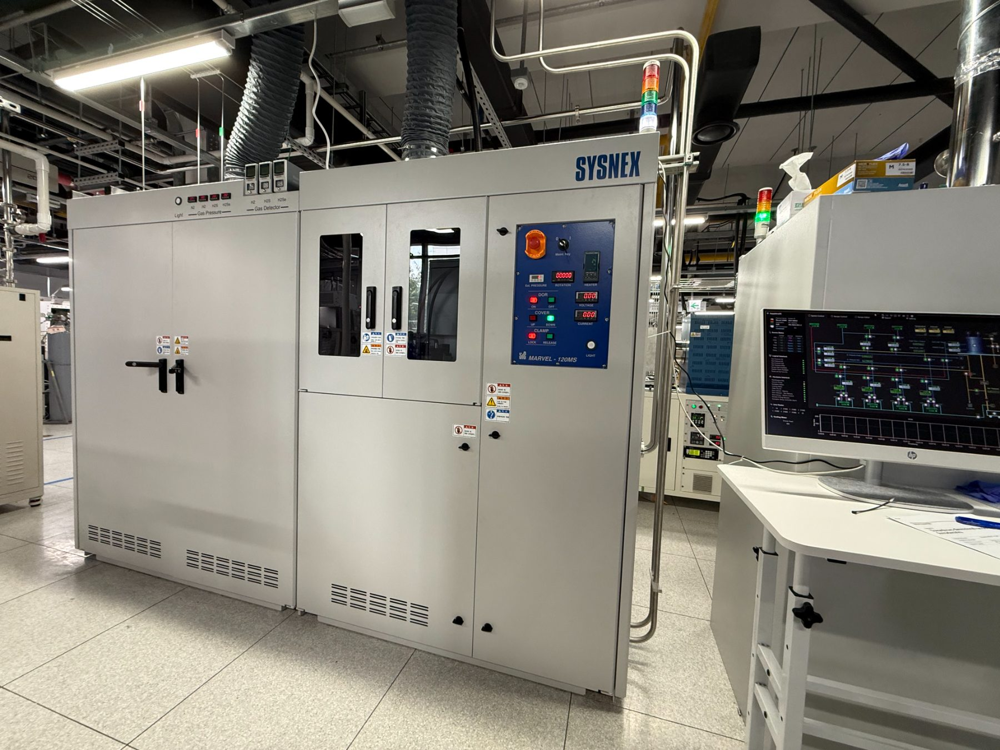
01
Cold-Wall MOCVD
III–VI Compound Semiconductors
Metal-organic CVD with cold-wall reactor for wafer-scale growth of III–VI compound semiconductors — InSe, In₂Se₃, and GaₓIn₁₋ₓSeᵧ alloys — with controlled composition and layer number.
MOCVDInSe · In₂Se₃(In,Ga)SeWafer-scale
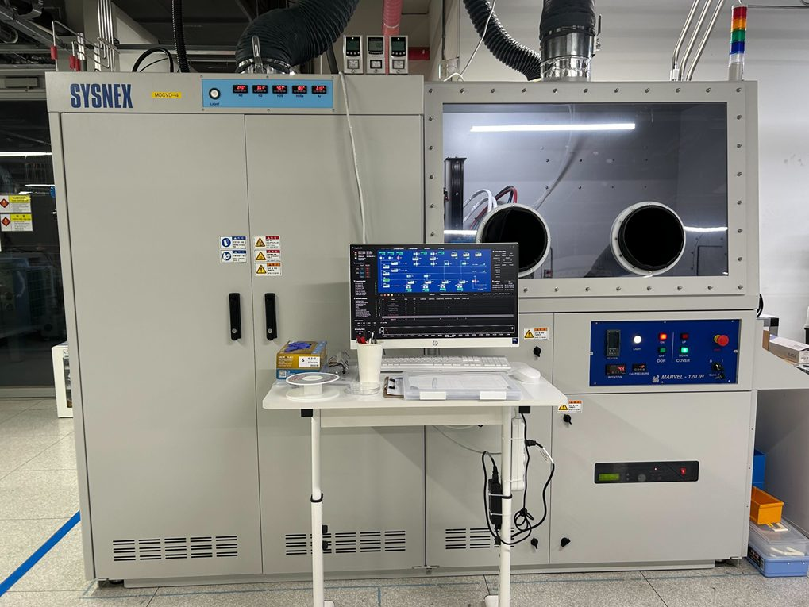
02
Cold-Wall MOCVD
Superconductors & vdW Heterostructures
Dedicated MOCVD with in-situ monitoring for FeSe₁₋ₓTeₓ topological superconductor films and lateral in-plane 2D heterostructures.
HeterostructuresFeSeTeTopological SC
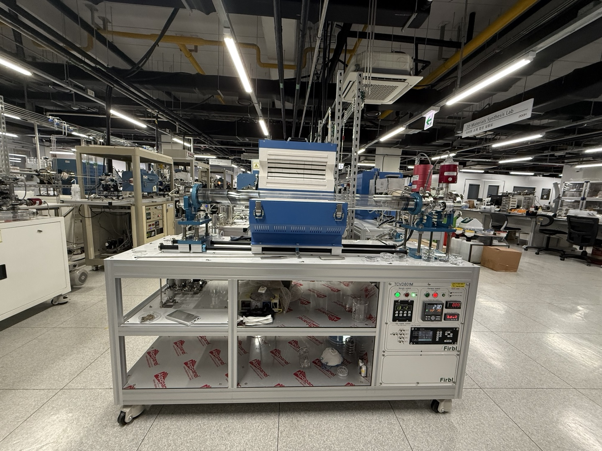
03
Thermal CVD
Topological Semimetals & Chalcogenides
Tube-furnace CVD for PtTe₂, WTe₂, MoTe₂, CuCrP₂S₆, CuCrS₂. SCVD protocols with halide salt precursors.
Thermal CVDDitelluridesSCVD
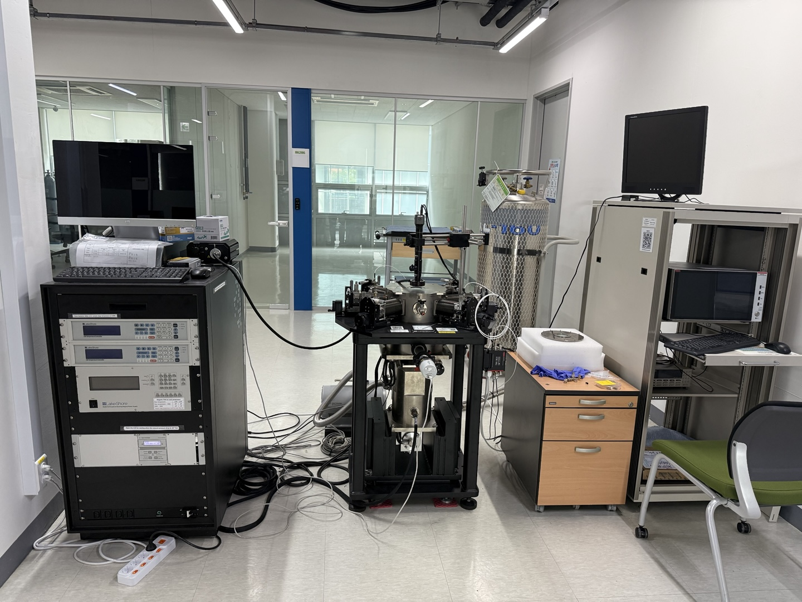
04
Cryogenic Probe Station
Magnetotransport & Superconductivity
Low-temperature transport to ≈4 K with magnetic fields. BKT transitions, quantum phase transitions, magnetotransport.
Cryogenic 4KMagnetotransportBKT
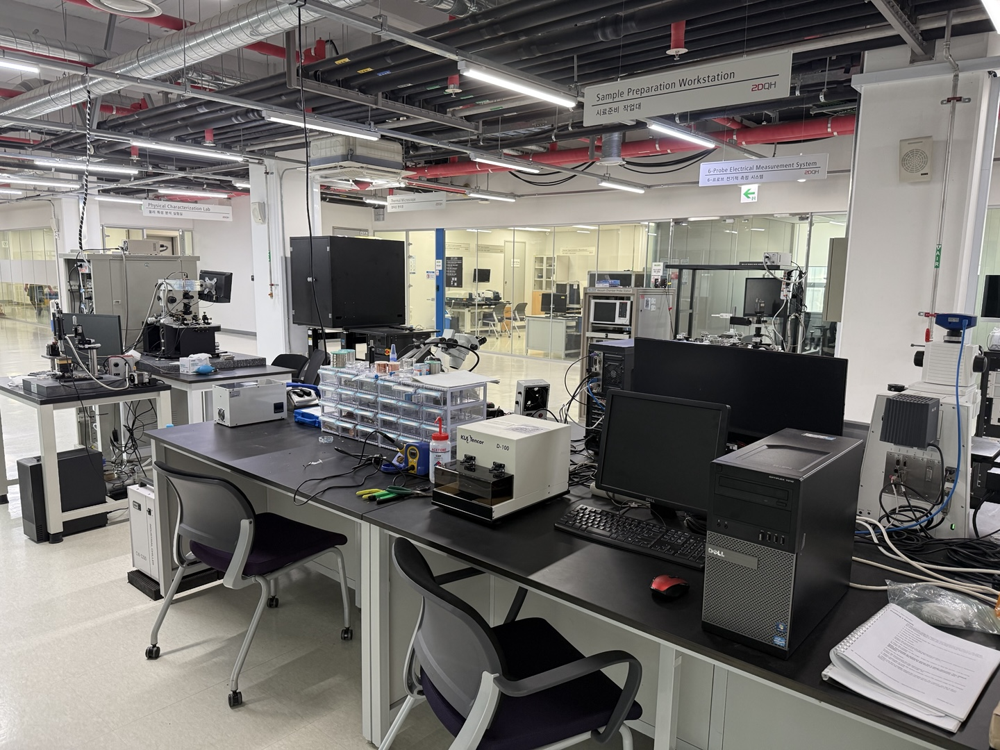
05
Optical Microscopy & Device Wiring
Sample Preparation
Optical microscopy with micromanipulator for layer identification, wire bonding, and probe contacts.
OpticalLayer IDWire bonding
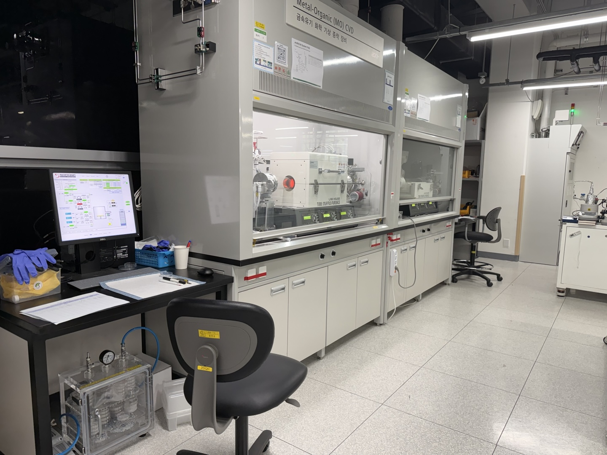
06
Hot-Wall MOCVD
TMD Semiconductor Growth
Hot-wall metal-organic CVD for wafer-scale growth of 2D semiconductors such as WS₂ and MoSe₂ with uniform layer control.
MOCVDHot-wallWS₂ · MoSe₂
Shared Fab Facilities
Our member centers
Beyond our own systems, our group is a participating group of the IBS Center for 2D Quantum Heterostructures (2DQH) and a member of SKKU's shared-instrument centers — so the instruments below are part of our everyday workflow, not occasional collaborations.
SKKU AQT · operated by IBS 2DQH · in our building
Advanced Quantum Technology Instrumentation Center
성균관대학교 양자기술첨단기기센터 · N-Center C, Rm 86275
AQT is operated under the IBS Center for 2D Quantum Heterostructures (2DQH), which our group is part of — and it shares our building at N-Center, so its core systems sit steps from our growth reactors.
01
Cs-corrected STEM / TEM
JEM-ARM300CF · ARM200CF
Aberration-corrected scanning/transmission electron microscopy with EDS and EELS — atomic-scale structure and chemistry of 2D crystals, defects, and heterointerfaces.
Atomic-resSTEM/TEMEDSEELS
02
PPMS Dynacool
Cryogenic Magnetotransport
Cryogen-free physical property measurement at 1.8–400 K and up to 14 T (and 9 T) — magnetotransport, Hall, and superconducting characterization of our devices.
1.8–400 K14 THall
03
X-ray Diffractometer
SmartLab 9 kW
High-resolution X-ray diffraction for phase identification, crystal orientation, and thin-film structural analysis of as-grown 2D layers.
XRDThin-filmPhase
04
Confocal Raman Imaging
2D Layer Characterization
Confocal Raman mapping for layer number, strain, doping, and quality across wafer-scale as-grown 2D semiconductors.
RamanImagingLayer ID
05
Ultra-low-frequency Raman
Interlayer Phonons
Access to ultra-low-frequency shear and breathing modes to probe interlayer coupling and stacking order in van der Waals heterostructures.
Low-freq RamanInterlayerStacking
06
THz Near-field Microscope
Nanoscale Optics · SNOM
Terahertz scanning near-field optical microscopy for sub-diffraction conductivity and carrier-density imaging, complemented by femtosecond transient-absorption and time-resolved PL.
THzSNOMUltrafast
SKKU CINAP
Center for Integrated Nanostructure Physics
성균관대학교 나노물리과학연구소
Our lab is affiliated with CINAP, whose nanofabrication cleanroom provides the full device process flow — deposition, lithography, and etching — to turn our crystals into devices.
A full nanofabrication cleanroom — the standard process tools we use to build devices.
01
E-beam Evaporator
Metal Deposition
Electron-beam evaporation of high-purity metals for source/drain contacts and gate electrodes.
EvaporationContacts
02
Sputtering System
Thin-Film Deposition
Sputter deposition of metals and dielectrics for device stacks and encapsulation layers.
SputterDielectrics
03
E-beam Lithography
Nanoscale Patterning
Direct-write electron-beam lithography for sub-100 nm device geometries and fine electrodes.
EBLSub-100 nm
04
Mask Aligner
Photolithography
UV contact-aligner photolithography for rapid, wafer-scale device patterning.
PhotolithoWafer-scale
05
Reactive Ion Etcher
Dry Etching
Plasma-based reactive ion etching for anisotropic pattern transfer and layer thinning.
RIEPlasma etch
QS LabTeaching
Courses by Prof. Seunguk Song.
Dept. of Energy ScienceDept. of Energy · SKKU
2026 Spring
UG / Master
Nanoscale Surface and Thin Film Science
ESC4023-41
Thin film engineering — deposition fundamentals, vacuum technology, surface science, microstructure control, and analytical characterization.
Undergraduate
Mathematics for Energy
COO2002
Mathematical modeling for energy systems. Translating physical phenomena into frameworks for design, analysis, and optimization.
Low-Dimensional Heterostructures and Electrical Devices
2D material properties, band structure engineering, ferroelectric transistors, low-energy computing platforms.
Friday 15:00–16:15, 16:30–17:45
2025 Spring
UG / Master
Nanoscale Surface and Thin Film Science
ESC4023-41
Same curriculum as 2026 Spring.
Friday 15:00–16:15, 16:30–17:45
Graduate
Introduction to Low-Dimensional van der Waals Materials
ESC518-41
2D material fundamentals, analytical tools, vdW heterostructures and applications.
Thursday 15:00–16:15, 16:30–17:45
2024 Fall
Graduate
Energy Nanomaterials 1 (에너지나노소재1)
ESC5002-41
Energy-efficient electrical devices: materials science and chemistry.
Thursday 12:00–13:15, 13:30–14:45
QS LabNews & Gallery
Publications, awards, grants & events from the lab.
Mar 2026
Latest update
2026-03-20
Sooyoung Choi joins as Research Associate
Sooyoung Choi has officially joined our group as a Research Associate (effective March 19, 2026). She earned her M.S. in Electrical Engineering from the University of Pennsylvania, bringing expertise in next-generation quantum materials.
2026-03-19
Prof. Song selected as Nanoscale 2026 Emerging Investigator
Prof. Seunguk Song has been selected as a Nanoscale 2026 Emerging Investigator by the Royal Society of Chemistry (RSC). Our MOCVD review is featured in the themed collection.
2026-03-02
New undergraduate interns join QS Lab
Taeyoung Jeon, Minseok Kim, Seonwoo Youn, Juhyung Lee, Dahyeon Oh, Hyeonsu Kim, Seoyoung Lim, Sangmin Joo, Siwon Yang, and Jaeho Kang have joined QS Lab as undergraduate interns. Welcome, all!
2026-01-28
33rd Korean Conference on Semiconductors
All QS Lab members participated in the 33rd Korean Conference on Semiconductors (반도체학술대회). Three graduate students presented research posters and engaged in active discussions.
2026-01-26
International Joint Workshop with NUS IFIM (Singapore)
We organized an international joint workshop with the Institute for Functional Intelligent Materials (IFIM) at the National University of Singapore, with talks, open discussions, and a lab tour.
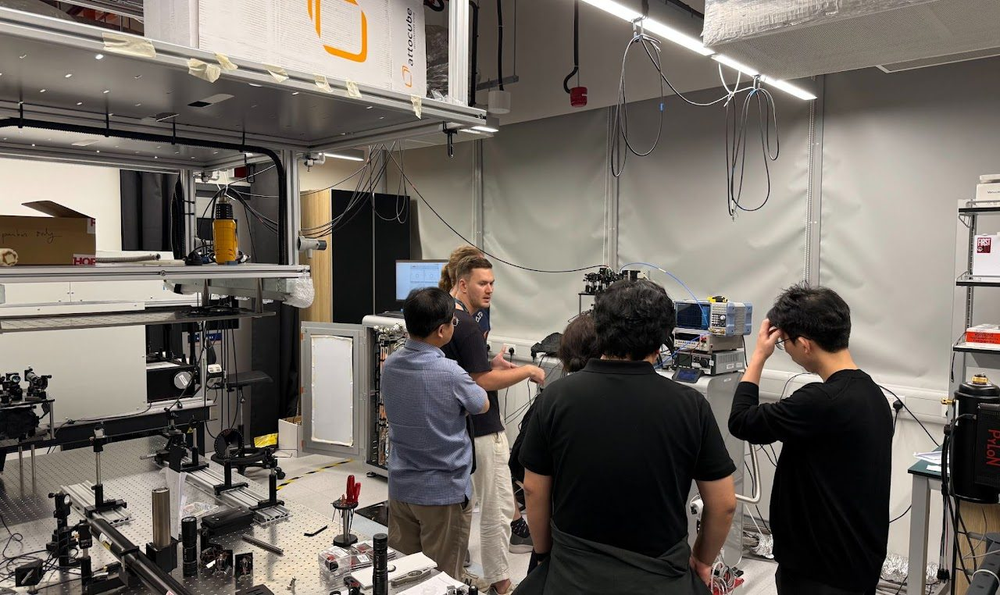
2026-01-06
Nature Reviews Electrical Engineering — Indium selenides review published
Our Perspective “Indium selenides for next-generation low-power computing devices” is published in Nature Reviews Electrical Engineering.
2026-01-05
Gunmo Koo joins as undergraduate intern
Gunmo Koo has joined QS Lab as an undergraduate intern. Welcome, Gunmo!
2025-12-12
Joint Workshop with IBS & University of Cambridge at ICAMD, Busan
Our lab, the IBS Center for 2D Quantum Heterostructures, and the University of Cambridge held a joint workshop at ICAMD in Busan — with talks by Profs. Mete Atatüre, Andrea Ferrari, and Manish Chhowalla.
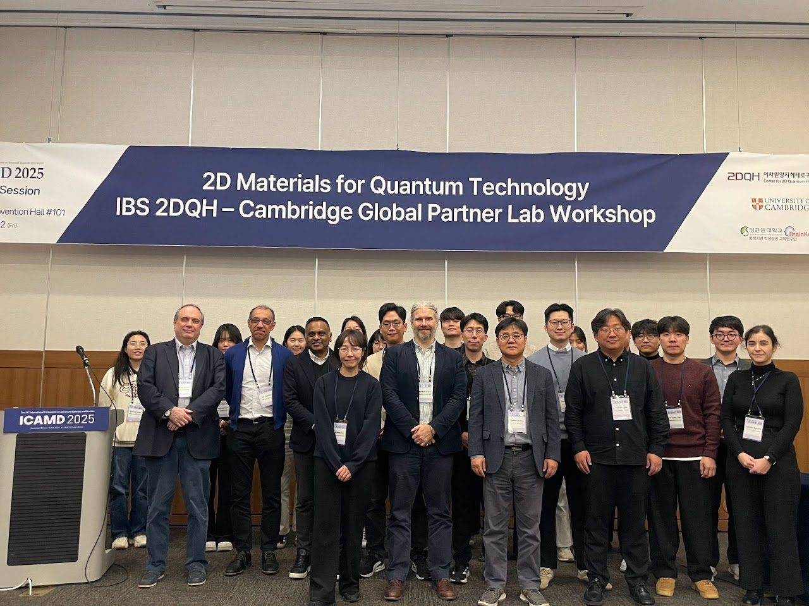
2025-11-21
Device (Cell Press) — Low-voltage ferroelectric FET paper published
Our collaborative work “Low-voltage ferroelectric field-effect transistors with ultrathin aluminum scandium nitride and 2D channels” is published in Device, 4, 100989 (2025).
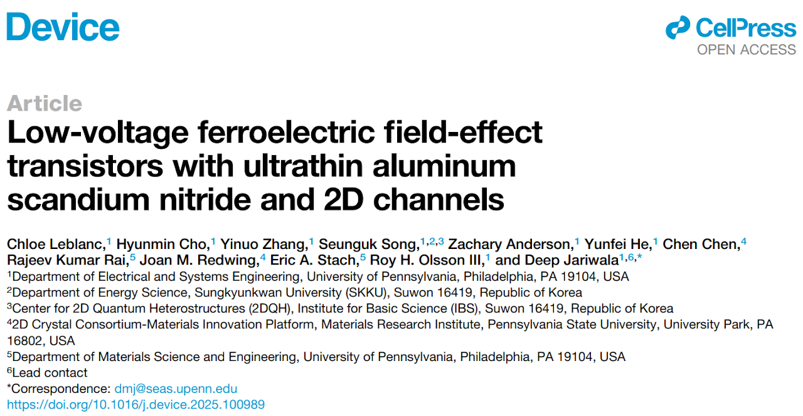
2025-10-31
Small Science — Edge-contacted nanosheet transistor paper published
Our work demonstrating wafer-scale fabrication of edge-contacted MoTe₂ nanosheet transistors via alloying-mediated phase engineering is published in Small Science.
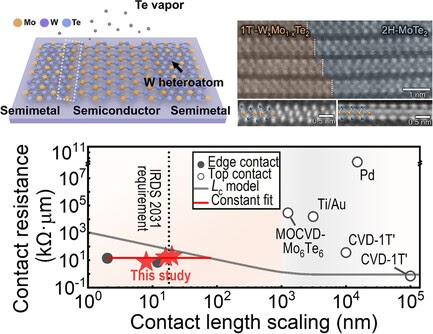
2025-10-28
Sangwon Yun joins as undergraduate intern
Sangwon Yun has joined QS Lab as an undergraduate intern. Welcome, Sangwon!
2025-10-14
Joint Workshop with Active Soft Materials & Robots Lab
Our Quantum Semiconductors Lab held a joint workshop with the Active Soft Materials & Robots Lab (Mechanical Engineering, SKKU), planning a collaborative project on ionic-gel–based damage-free transfer of 2D materials.
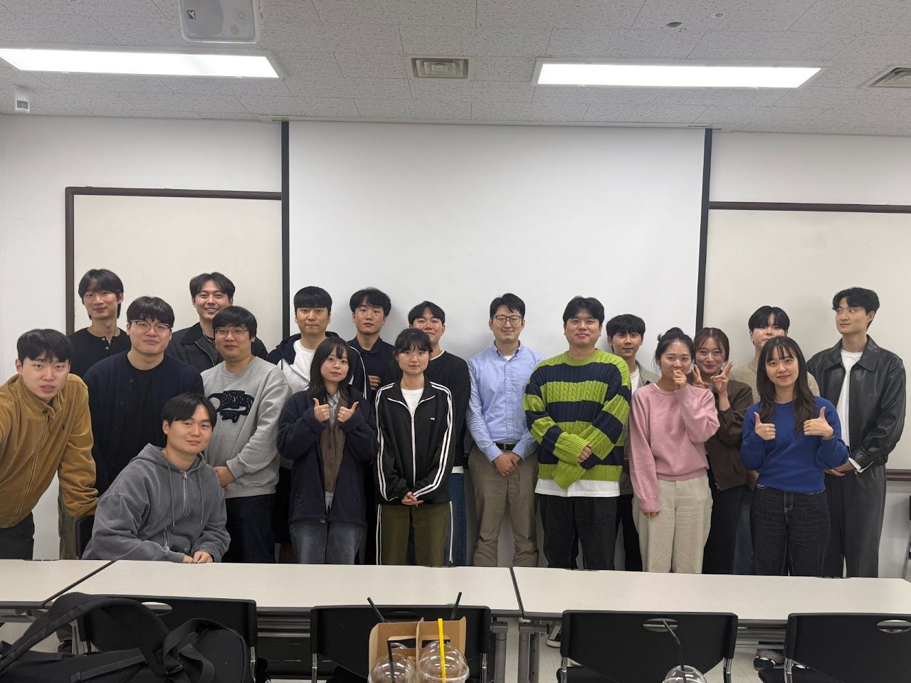
2025-09-24
Nanoscale review — MOCVD of 2D chalcogenides published
Our review “Metal-organic chemical vapour deposition of van der Waals 2D chalcogenides and heterostructures” is published in Nanoscale.
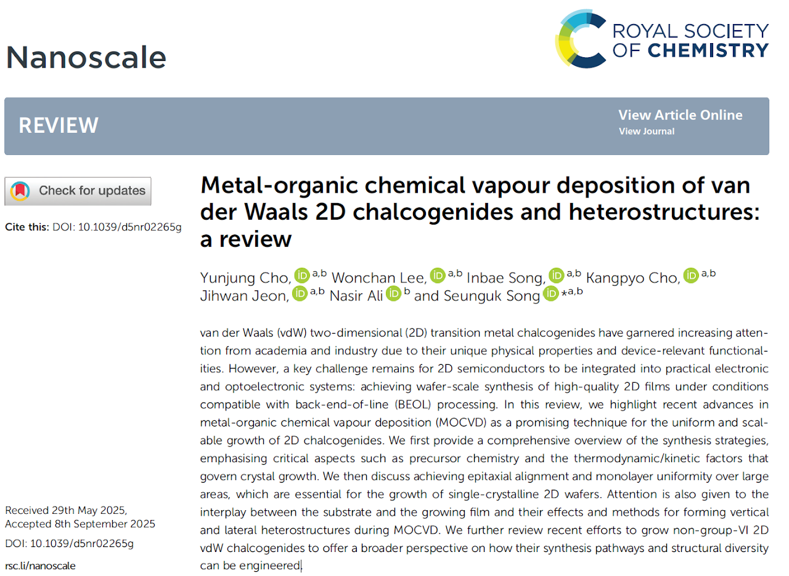
2025-09-08
Seohee Park joins as undergraduate intern
Seohee Park has joined QS Lab as an undergraduate intern. Welcome, Seohee!
2025-09-06
Advanced Functional Materials — Interfacial control in 2D heterostructures
Our collaborative study “Interfacial Control of Degradation Pathways in 2D Heterostructures” is published in Advanced Functional Materials.
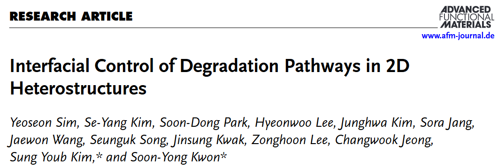
2025-08-17
Nature Communications — Reconfigurable carbon-nanotube ferroelectric FET published
Our collaborative work “Reconfigurable single-walled carbon nanotube ferroelectric field-effect transistors” is published in Nature Communications, 16, 7655 (2025).
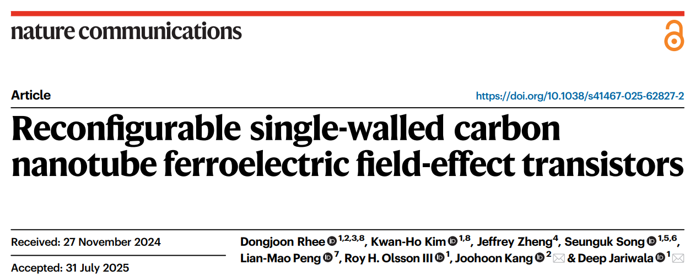
2025-08-11
Chaehui Lim joins as graduate student
Chaehui Lim has joined QS Lab as a graduate student. Welcome, Chaehui!
2025-08-04
Yerin So joins as undergraduate intern
Yerin So has joined QS Lab as an undergraduate intern. Welcome, Yerin!
2025-08-01
Dr. Nasir Ali joins as postdoctoral researcher
Dr. Nasir Ali has joined QS Lab as a postdoctoral researcher, focusing on quantum-phase metal–insulator transitions, metallic transport, and critical phenomena in 2D materials. Welcome, Nasir!
2025-07-31
IBS Global Partner Lab with University of Cambridge (2025–2031)
As a participating group of the IBS Center for 2D Quantum Heterostructures (2DQH), our lab began collaboration with the University of Cambridge’s Cavendish Laboratory through the IBS Global Partner Lab.
2025-07-15
IBS 2DQH 2025 Summer Workshop, Vivaldi Park
From July 15–17, 2025 we joined the IBS 2DQH Summer Workshop at Vivaldi Park, Hongcheon — sharing current research and discussing future plans across the 2DQH center.
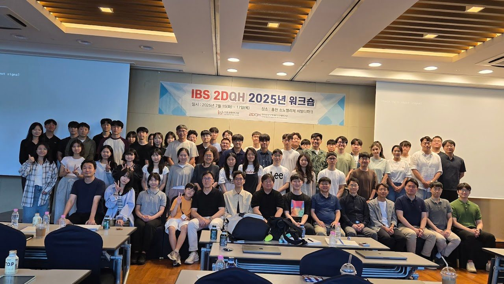
2025-07-01
Ceramist — Review on electrical measurement of 2D transistors published
Kyungwu Kwon published a first-author review “Methodologies for Electrical Measurement and Parameter Analysis of 2D Semiconductor Transistors” in Ceramist.
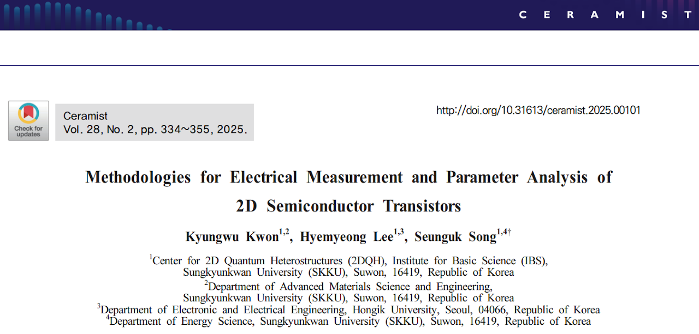
2025-03-04
New graduate students join QS Lab
Wonchan Lee, Yunjung Cho, Inbae Song, and Kangpyo Cho have joined QS Lab as graduate students.
2025-03-01
National research project awarded — vdW ferroelectric transistors
Awarded a national research project, “Development of Quantum Phase Transition Non-Volatile Control Technology via Large-Area van der Waals Ferroelectric Transistors,” funded by MSIT and the NRF of Korea (2025.03–2030.02).
2025-03-01
National research infrastructure awarded — Cold-Wall MOCVD
Selected for a national research-infrastructure project to establish a Cold-Wall MOCVD system for quantum-semimetal synthesis, funded by MSIT and the Korea Basic Science Institute (2025.03–2026.02).
2025-02-26
ACS Nano — High-performance MoS₂/AlScN FeFET paper published
Our paper “High Current and Carrier Densities in 2D MoS₂/AlScN Field-Effect Transistors via Ferroelectric Gating and Ohmic Contacts” is published in ACS Nano.
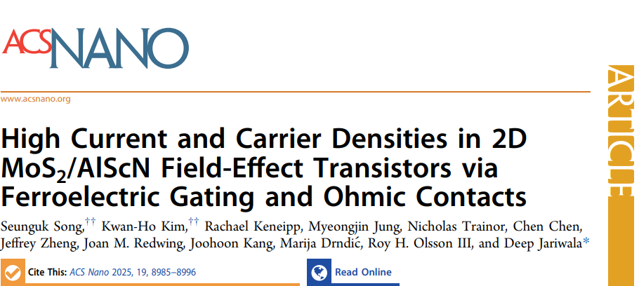
2024-09-02
Participation in the BK21 FOUR program
QS Lab is participating in the BK21 FOUR Educational and Research Group for Fostering Innovative Talents in Integrated Renewable Energy Systems, funded by MOE and MSIT (through 2027).
2024-08-01
QS Lab at SKKU officially started!
The Quantum Semiconductor Laboratory at Sungkyunkwan University has officially started. We are located at N Center 3F #86383, SKKU.
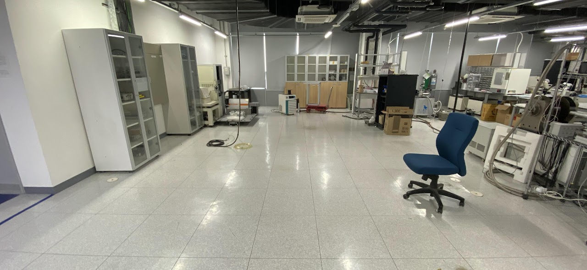
2024-08-01
SKKU 2024 Start-up Fund awarded
Received funding through the 2024 Start-up Fund Support Program by Sungkyunkwan University (2024.08–2026.07).
2024-08-01
IBS collaborative project joined
Participating in the IBS collaborative project “Correlation between Structure and Properties of Quantum Heterostructures at the Atomic Scale,” funded by MSIT (from 2024, for eight years).
QS LabContact & Openings
Find us at N-Center, SKKU · We are recruiting.
RecruitingGraduate studentsPostdoc
Quantum Semiconductor Laboratory
Address
N Center 3F #86383, Sungkyunkwan University (SKKU) 2066 Seobu-ro, Cheoncheon-dong, Jangan-gu, Suwon-si, Gyeonggi-do, South Korea
We are recruiting motivated undergraduates, graduate students, and postdoctoral researchers interested in low-dimensional semiconductor synthesis and quantum technologies. Our work spans chemistry, chemical engineering, physics, electrical engineering, and materials science. We offer full tuition scholarships, top-tier stipends, publication incentives, and support for international research exchange.
Graduate students · M.S.–Ph.D. / Ph.D.
Low-dimensional materials for emerging computing & quantum information
Enrollment in the Department of Energy Science, SKKU, with research scholarship and stipend per SKKU and project regulations, plus international collaboration and conference opportunities.
What you'll work on
MOCVD growth of low-temperature, large-area 2D materials
B.S. or M.S. in materials science, chemical engineering, physics, EE, chemistry, or related
Basic understanding of semiconductor physics (coursework is sufficient)
Postdoctoral researcher
Quantum information science with 2D semiconductor heterostructures
One-year contract (renewable), full-time, with competitive salary commensurate with experience. Experience in photonics is preferred.
What you'll work on
MOCVD growth of low-temperature, large-area 2D materials
Transfer & patterning of heterostructure devices
Single-photon emission characterization
Structural & chemical analysis
Who we're looking for
Ph.D. in a relevant field (or expected by start date)
Strong proposal/manuscript writing and communication skills
Interested? Email a single PDF (CV + transcript + a short statement of research interest) to seunguk@skku.edu. Selection is by document review, an interview with research presentation and lab tour (Zoom option available), and final guidance on the SKKU graduate application.